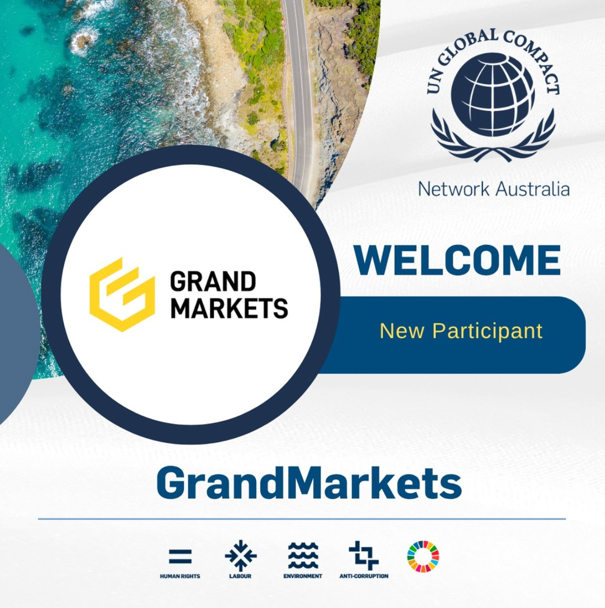

About Grand Markets Academy
About Us
Grand Markets Academy
Grand Markets Academy is a financial education and technology learning platform based in Sydney, Australia. It supports learners through structured finance education, quantitative research workflows, public events, and community resources.
The Academy focuses on clear concepts, responsible language, research discipline, and practical documentation habits. Public content is presented for general education and does not provide personal financial advice or promised outcomes.
Our ecosystem connects education, research collaboration, financial technology content, and learner support across multiple regions.
Sydney, Australia · Grand Markets HQ
Group Structure
Learning ecosystem and operating network
Global Learning Network
GMA connects finance education, technology research, study resources, and public learning events into one learning ecosystem.
Education content
Finance education, quantitative research, study planning, and review methods.
Research collaboration
Data workflow learning, AI-assisted study support, and documentation practice.
Institutional ecosystem
Industry events, technology partners, and professional learning resources.
Community support
Course updates, learning discussions, event notices, and learner support.
Timeline
Development milestones
Brand foundation
Grand Markets was established in Sydney and began building its education and technology ecosystem.
Operating foundation
Team building, internal systems, and learning-resource planning formed the foundation for later growth.
Regional expansion
A broader operating network developed across multiple regions, supporting education, technology, and community engagement.
Course-system upgrade
The Academy strengthened its course structure, research resources, and learning-support process.
Events and collaboration
GMA participated in public events, technology collaborations, and education-oriented initiatives.
Learning ecosystem
The Academy continues to refine public content, community support, and professional learning pathways.
Education Principles
Clear scope for public learning content
GMA presents finance and technology topics as general education. Course materials are designed to build literacy, research discipline, documentation habits, and responsible communication.
LearnConcepts
FoundationGeneral Education
Content explains concepts and frameworks without providing personal financial, legal, or career advice.
ReviewMethods
ResearchWorkflow Practice
Learning activities focus on data organisation, sample analysis, documentation, and reflection.
ScopeBoundaries
ComplianceResponsible Communication
Materials distinguish educational discussion from personalised recommendations or outcome statements.
Partners & Ecosystem
Building a learning ecosystem with global perspective
Institutional Ecosystem
GMA presents its ecosystem as a relationship network across public events, learning resources, technology collaboration, and community engagement.
GMA EcosystemEducation · Research · FinTech · Global Network
01
International organisations
Sustainability, finance education, and public learning contextUnited Nations Global CompactFinTech Australia
02
Events and recognition
Public events, brand visibility, and education milestonesWiki Finance ExpoCIIEBrand communication events
03
Technology and research partners
Data workflow learning, AI-assisted research, and market-literacy resourcesCICC Commodity Trading LimitedPandaAILMAX
04
Technology and social initiatives
Risk-technology learning, public-interest projects, and broader ecosystem explorationTraceVaults risk-technology contextJade Days travel-service project
Social Responsibility
Corporate citizenship and community contribution
GMA supports public-interest initiatives and community-oriented education projects. Social responsibility content is presented as background information, not as a product or service endorsement.
The Academy continues to support learning, responsible communication, and public education initiatives.
